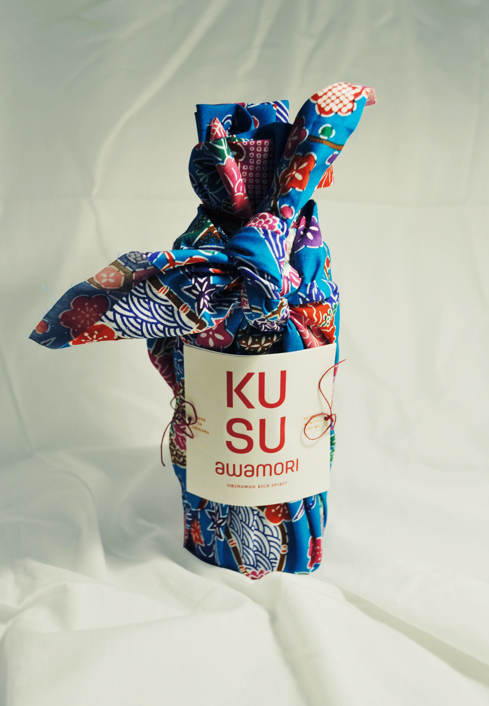
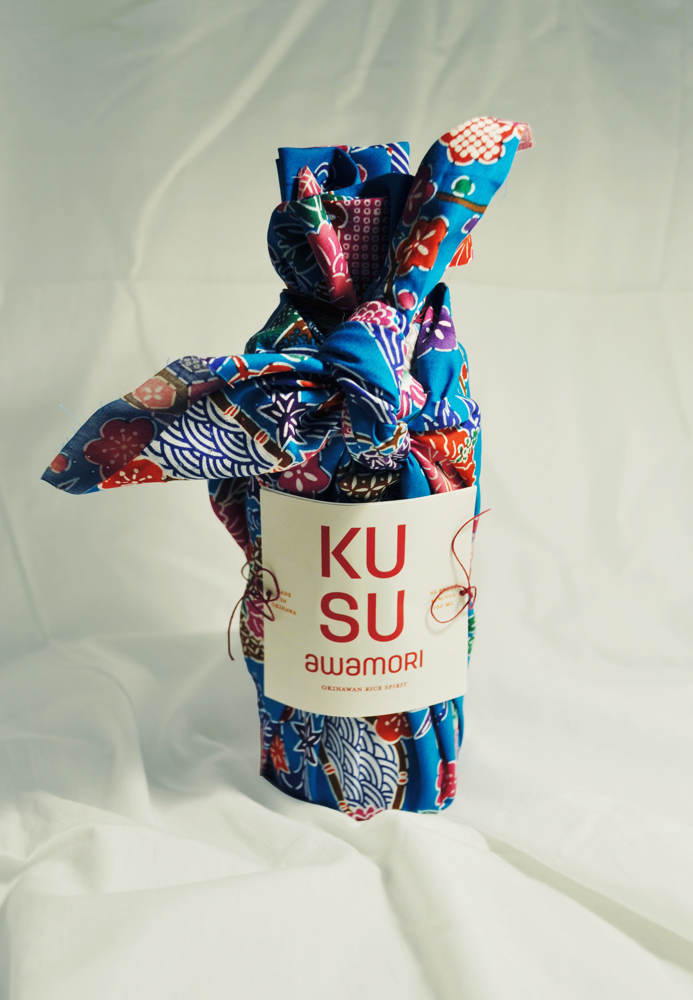
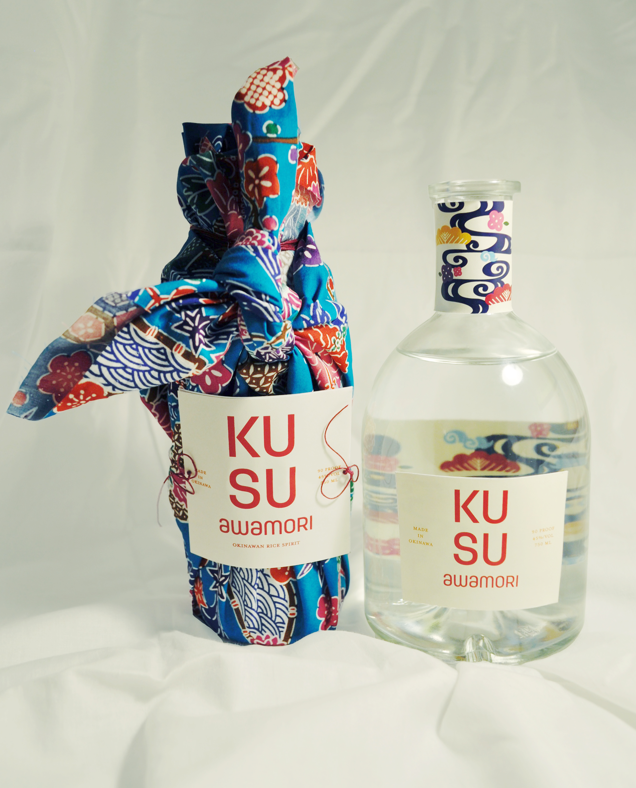
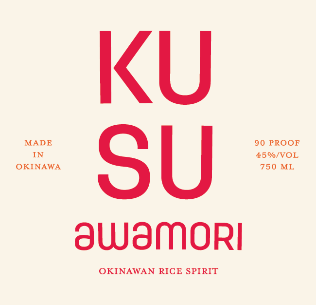
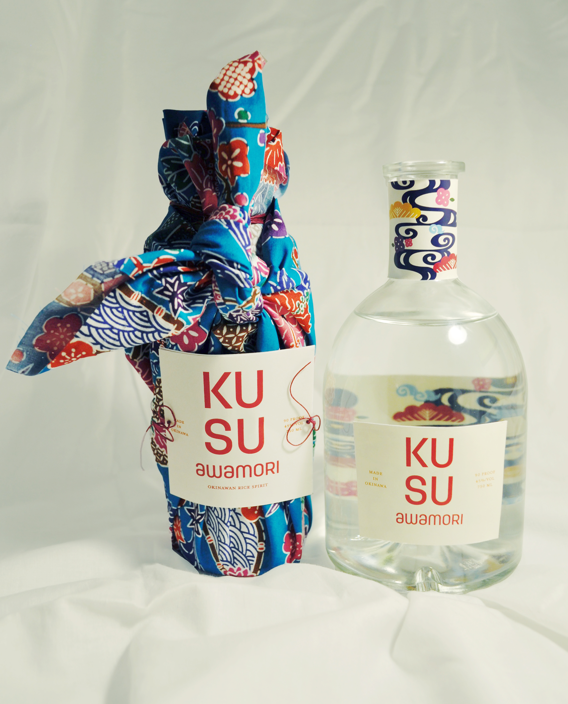
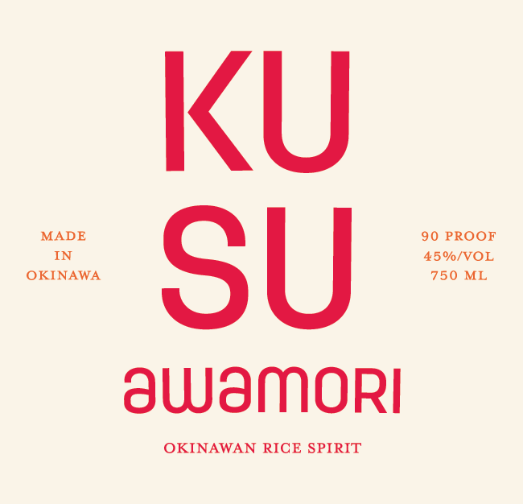

A drink with over 600 years of history, awamori is Japan’s oldest distilled liquor. Awamori was born from Okinawa’s trading history and is indigenous to the island. Unlike sake, awamori is distilled, the drink is uniquely made from long grain indica rice imported from Thailand. Awamori is a distinctive and special liquor. It exclusively uses black koji mold, which is native to the island.
Kusu is the Okinawan word for Koshu, which translates to “old liquor” in English. The branding for Kusu uses graphics that are inspired by the language of bingata, a traditional fabric dyeing technique that is indigenous to Okinawa. Kusu’s brand uses contemporary style graphics to modernize and blend the traditional with contemporary. Much of Okinawa’s graphics are based off of tropical elements, marine life, and shiisaa (also known as koma-inu or lion dogs).

 

 


